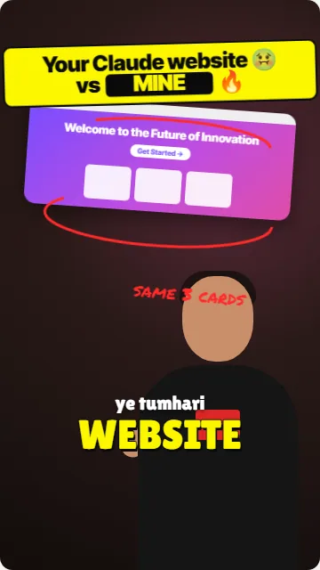
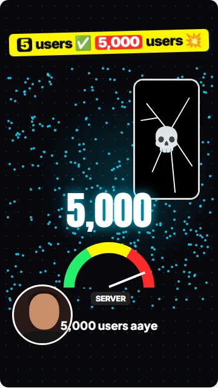
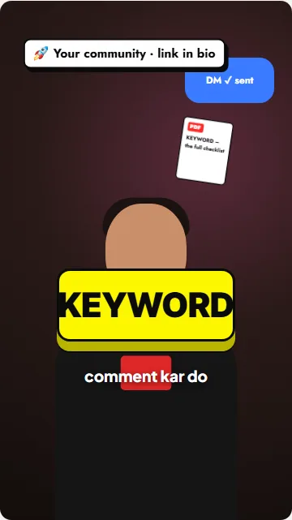
Ready
Naman · Infotainment Motion
Naman's own style
Hype, result-first reels: a tilted yellow headline slab, your bad-vs-premium result in the first second, numbers that turn into moving crowds and machines, and roasts with stamps, stickers and meme sounds.
needs: you + screen recordings
1 format: Result-first build & teach reel
English (English speech, English captions) · 3 more language options
Best with a person matte (made automatically) and screen recordings of what you talk about; missing recordings become built mock-ups.
To use it, tell Claude Naman · Infotainment Motion · Full preview →
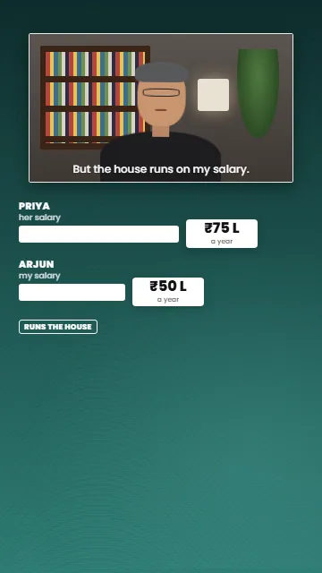
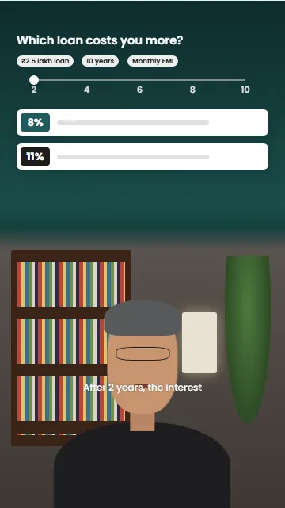
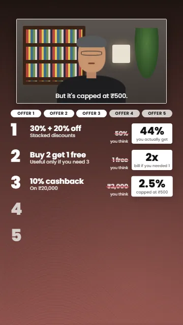
Ready
Ledger Explainer
inspired by Ankur Warikoo
Calm explainers that do the maths on screen: your face in a framed card, white ledger rows that land on every number, the claim crossed out and the real figure revealed.
needs: just you talking
F-A: just you talking
F-B: just you talking
F-C: you + your own B-roll
3 formats: Ledger inset · Face-bottom calculator · Case file
English (English speech, English captions) · 3 more language options
Case-file format needs 15-25 of your own monochrome stills per episode; without them it uses drawn object plates.
To use it, tell Claude Ledger Explainer · Full preview →
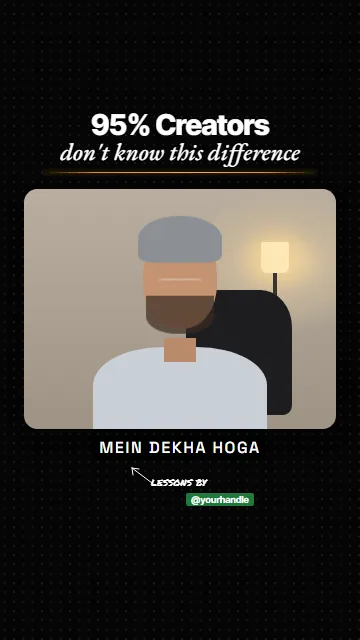
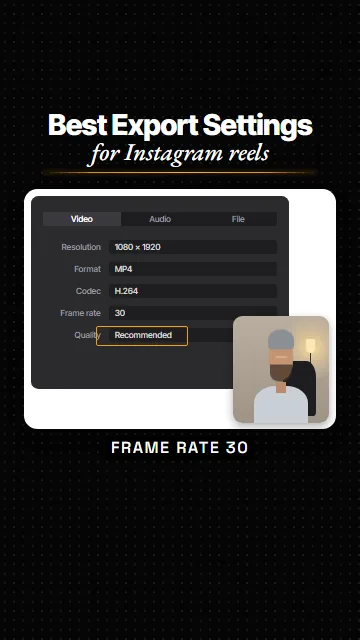
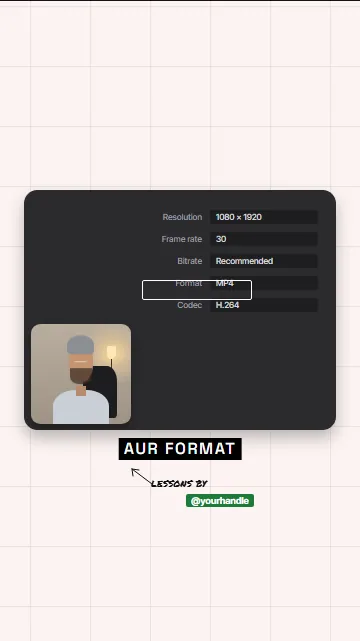
Ready
Lesson Frame
inspired by Editing Explained
Lessons printed on a page: a fixed two-line title, one rounded card that cuts between your face, big term cards and your settings screen, and tracked caps captions underneath.
needs: just you talking
F-A: just you talking
F-B: you + screen recordings
2 formats: Lesson Frame · Screen Walkthrough
English (English speech, English captions) · 3 more language options
To use it, tell Claude Lesson Frame · Full preview →
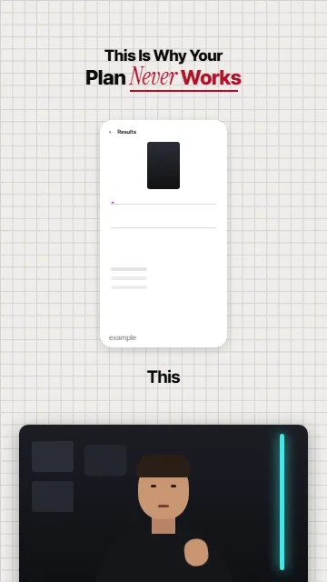
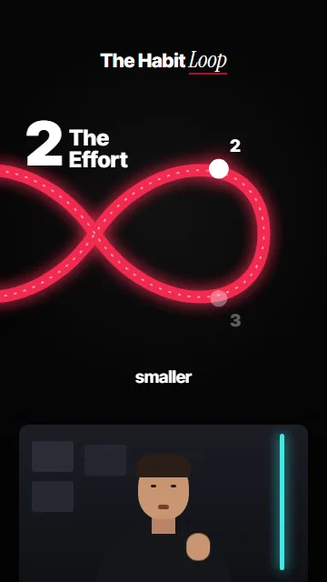
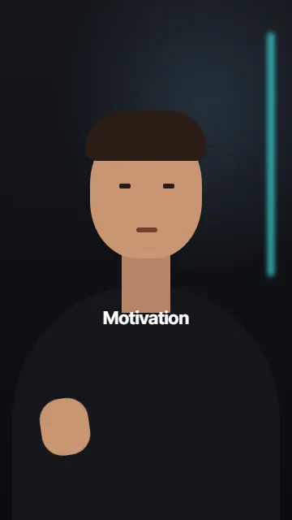
Ready
Whiteboard Split
inspired by Kallaway
Teach a framework like a whiteboard: an animated diagram on top, one word at a time in the middle, your face in a rounded window below, and a hard cut to your face on every claim.
needs: just you talking
1 format: Whiteboard split
English (English speech, English captions) · 3 more language options
best with a 4K landscape take: the full-face punches are a crop of it
To use it, tell Claude Whiteboard Split · Full preview →
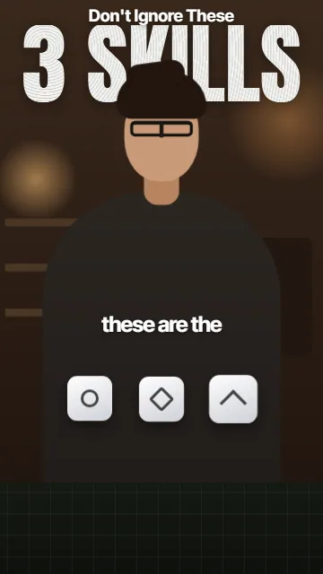
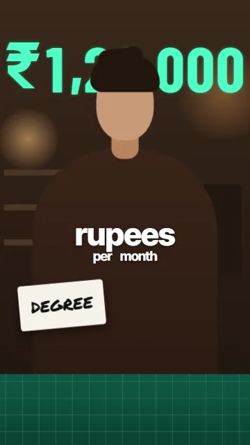
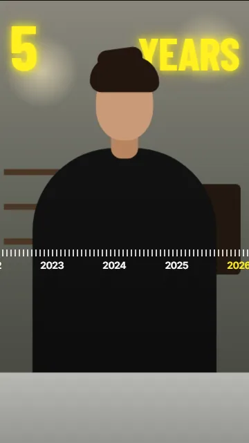
Ready
Two-Tier Hero
inspired by Tharun Speaks
Fast desk talking-head reels: every word pops on your chest in two sizes, and a giant number or word stands behind your head.
needs: just you at a desk (props and your own B-roll make it better, both optional)
F-A: you + screen recordings
1 format: Two-tier hero talking head
English (English speech, English captions) · 3 more language options
Best with one or two props in the hook and a few of your own B-roll clips; every one has a built-in fallback.
To use it, tell Claude Two-Tier Hero · Full preview →
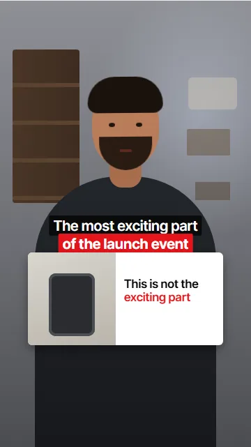
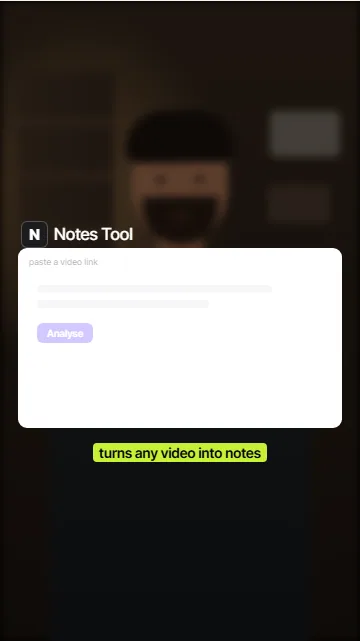
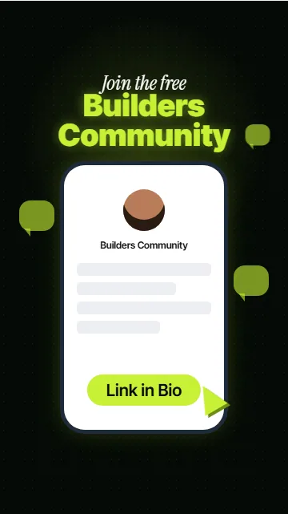
Ready
Tech Countdown
inspired by Vaibhav Sisinty
Premium tech-news countdowns: big lime #NN numerals, tool cards over your dimmed shot, small pill captions with italic-serif emphasis and a Save / Follow / Community finish.
needs: you talking + screen recordings of each tool (logos optional)
F-A: you + screen recordings
F-B: you + screen recordings
2 formats: Countdown · Daily brief
English (English speech, English captions) · 3 more language options
Best with a 5-15 s screen recording per item; without them the tool cards fall back to recreated, labelled UI.
To use it, tell Claude Tech Countdown · Full preview →
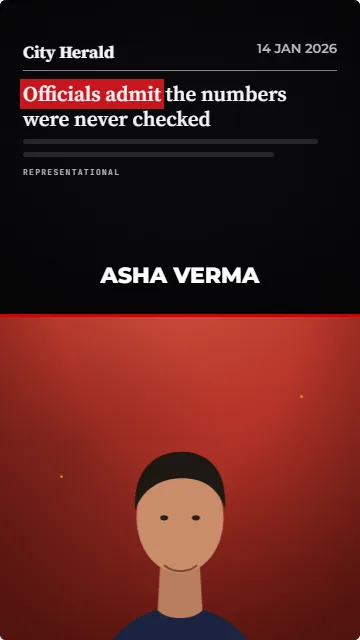
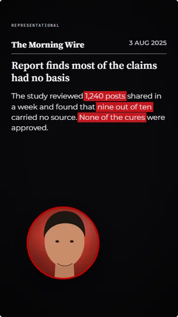
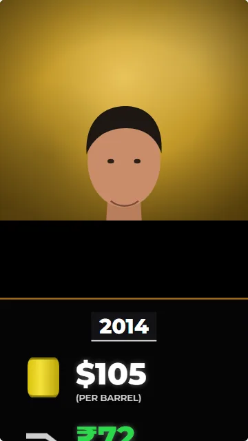
Ready
Evidence Explainer
inspired by Dhruv Rathee
News and myth-busting explainers: you on a topic-coloured backdrop, every claim proved by a source card with red highlights, dates and names as plates, a stamped verdict.
needs: you talking (clean background) + your screenshots or clips if you have them
F-A: you + your own B-roll
1 format: Evidence explainer
English (English speech, English captions) · 3 more language options
without your own screenshots or clips, Claude builds the headline and quote cards itself (labelled REPRESENTATIONAL)
To use it, tell Claude Evidence Explainer · Full preview →
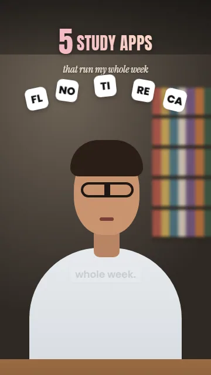
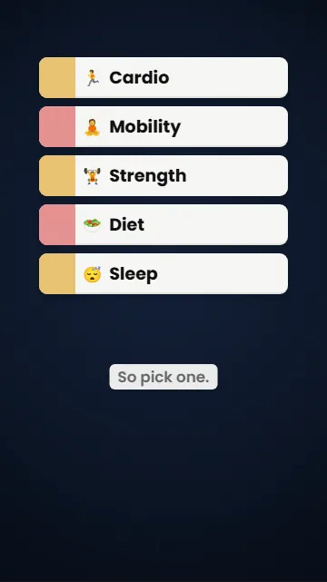
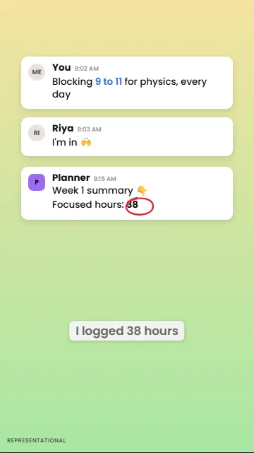
Ready
Illustrated Desk
inspired by Ali Abdaal
Calm, bright desk explainers: every app, book or idea you name drops in as a polished card above your head, with soft word-by-word captions and red hand-drawn circles.
needs: you + screen recordings
F-A: you + screen recordings
F-B: you + screen recordings
F-C: you + your own B-roll
3 formats: Desk list · Concept cutaways · Story with B-roll
English (English speech, English captions) · 3 more language options
Best with a screenshot or screen recording of each tool you name; without them Claude builds clean labelled mock-ups. The story format needs your own B-roll.
To use it, tell Claude Illustrated Desk · Full preview →
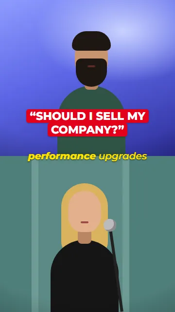
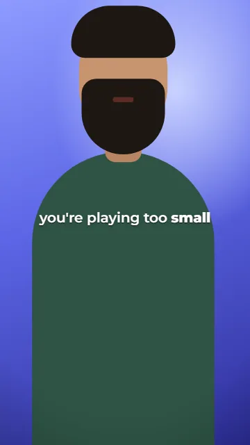
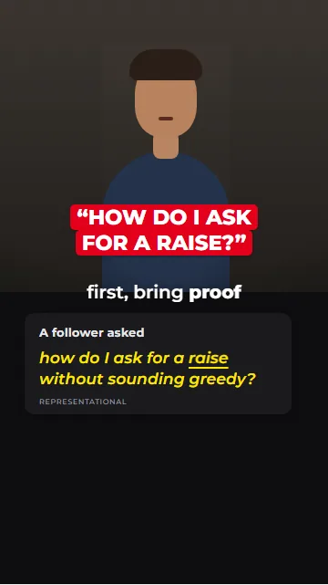
Ready
Conversation Clip
inspired by Alex Hormozi
Real conversations cut tight: a red quote pill on the opener, big centre captions in two colours (you in white, the other voice in yellow italic), and nothing else on screen.
needs: a conversation (two or more people on camera)
F-A: a conversation (two or more people on camera)
F-B: just you talking
2 formats: Two-person Q&A · Solo answer
English (English speech, English captions) · 3 more language options
Two-person Q&A works best with two cameras (or one 4K wide); Solo answer needs just you talking.
To use it, tell Claude Conversation Clip · Full preview →
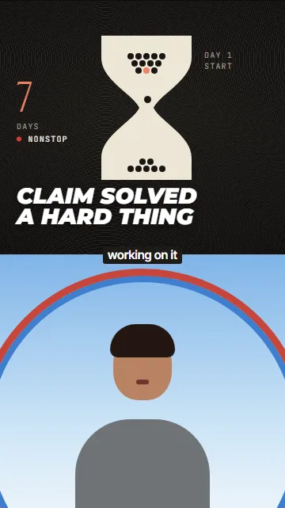
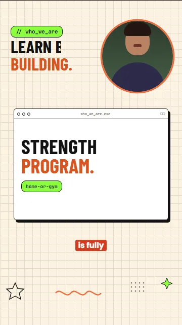
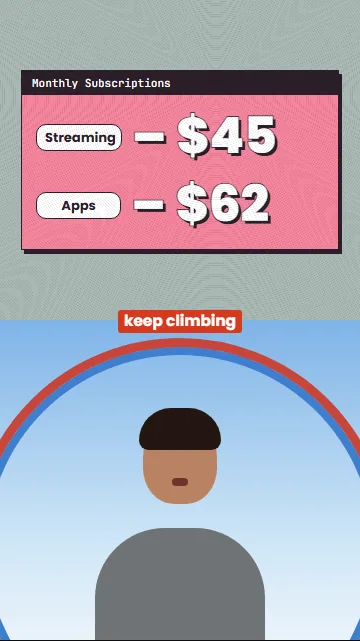
Ready
Graphic-First Explainer
inspired by 100xEngineers
Designed graphics carry the story: one full-screen animated card per idea, numbers that count up, short pill captions, and you as a guest in the frame.
needs: just you talking
2 formats: Editorial figure explainer · Ad card
English (English speech, English captions) · 3 more language options
Editorial explainers can open on a clip you own; without one they open on a live number.
To use it, tell Claude Graphic-First Explainer · Full preview →
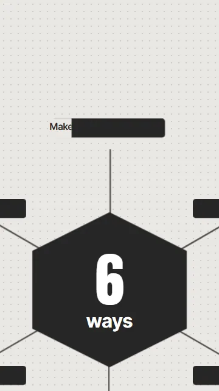
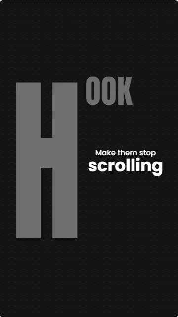
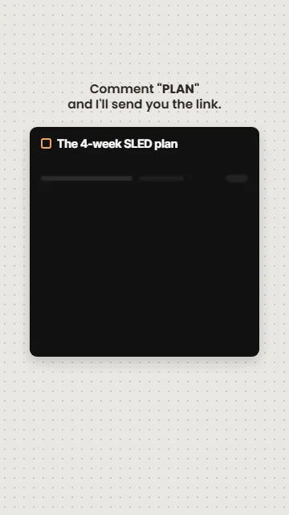
ReadyFaceless · no face on camera
Faceless Kinetic Framework
inspired by peter.visuals
No face, just your voice: bold and italic lines stack on warm graph paper while a camera glides through your framework, ending on a free-resource card.
needs: a voice-over only
1 format: Kinetic framework
English (English speech, English captions) · 3 more language options
Voice-over only. Your own example clips or screenshots make the proof cards real; without them Claude builds clean created cards.
To use it, tell Claude Faceless Kinetic Framework · Full preview →
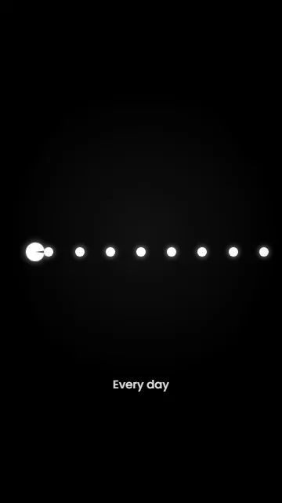
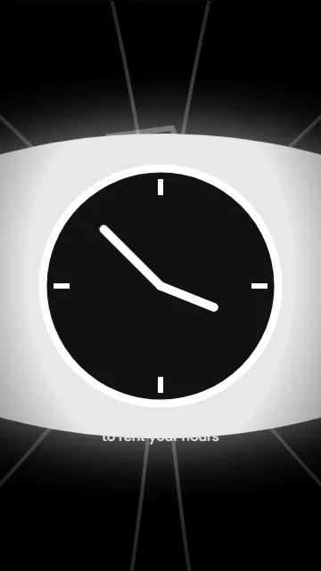
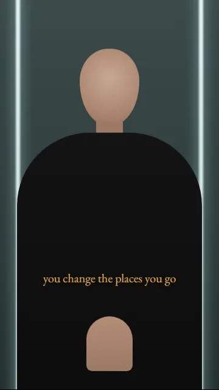
ReadyFaceless · no face on camera
Monochrome Metaphor
inspired by Dan Koe
Calm black-and-white essays: your voice-over becomes one glowing metaphor that morphs scene to scene, with small quiet captions. A seated-on-camera version is included.
needs: a voice-over only
F-B: a voice-over only
F-A: just you talking
2 formats: Metaphor animation · Seated essay
English (English speech, English captions) · 3 more language options
Morph chains are checked by eye until the continuity validator ships; lit objects (towers, globes, spheres) render as engine 3D objects, one at a time.
To use it, tell Claude Monochrome Metaphor · Full preview →
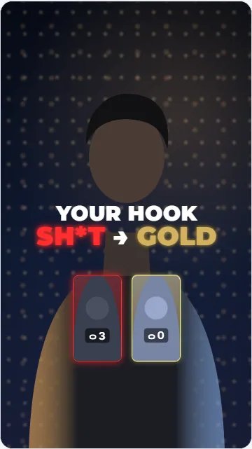
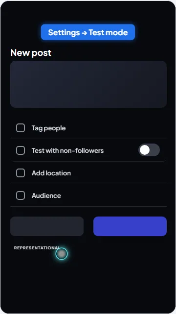
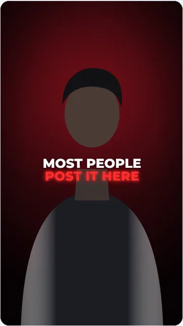
Ready
Proof Dashboard
inspired by Devin Jatho
Hype explainers that prove every claim: you on a swapped night-city set, a glowing two-line banner at your chest, and real app screens with a glowing cursor tapping through them.
needs: you + screen recordings
1 format: Proof Dashboard
English (English speech, English captions) · 3 more language options
Best with screen recordings of the app you teach and your own results screens; without them Claude builds labelled generic screens.
To use it, tell Claude Proof Dashboard · Full preview →
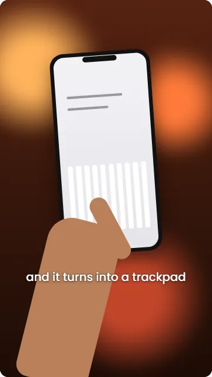
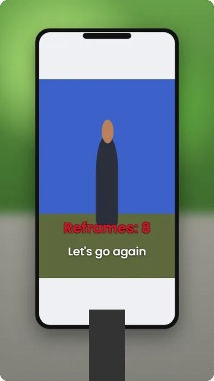
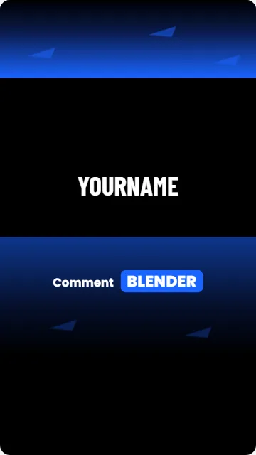
Ready · best with your own footage
Device Whip
inspired by Mrwhosetheboss
Hands-on gadget reviews: a blue italic title over the device you hold, a whip into a close-up of it in your hand, small clean captions and a red counter that ticks up.
needs: you talking with the device in hand + close-up clips of the device in your hand (a second camera or phone)
F-A: you + your own B-roll
1 format: Device Whip
English (English speech, English captions) · 3 more language options
Shoot close-ups of the device in your hand (checklist included); without them the reel falls back to screen recordings in a drawn phone.
To use it, tell Claude Device Whip · Full preview →
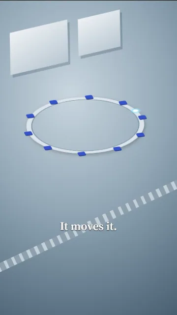
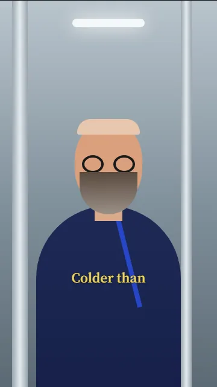
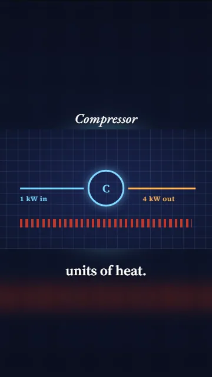
Ready · best with your own footage
Long-form Re-cut
inspired by Veritasium
Turn your own long video into a calm 2-minute short: it starts mid-thought on your best shot, every shot reframed to vertical, with serif captions that turn gold when a guest speaks.
needs: your own finished long-form video (16:9, 1080p or 4K)
F-A: an edited long video to re-cut
1 format: Master re-cut
English (English speech, English captions) · 3 more language options
Works from your finished long-form video only; 4K masters crop sharpest. Wide diagrams show as a centred band.
To use it, tell Claude Long-form Re-cut · Full preview →
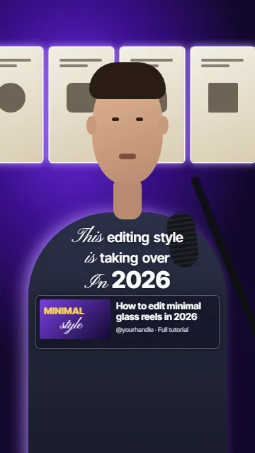
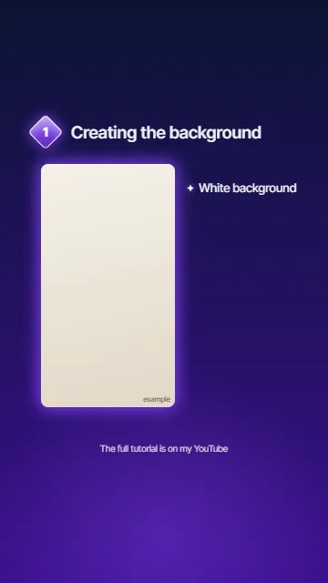
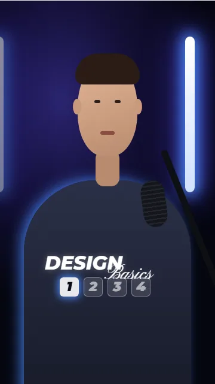
Ready
Glass Duet
inspired by Joseph's Work
Premium teaching reels: captions that mix an elegant script with bold words at chest height, glowing glass cards and numbered diamonds in your studio colour, and your face gliding into a floating card.
needs: you + screen recordings
2 formats: Tutorial explainer · Course sales
English (English speech, English captions) · 3 more language options
Best with a coloured-light set; screenshots or exports of what you teach make the tutorial cards real (otherwise they are built as examples).
To use it, tell Claude Glass Duet · Full preview →
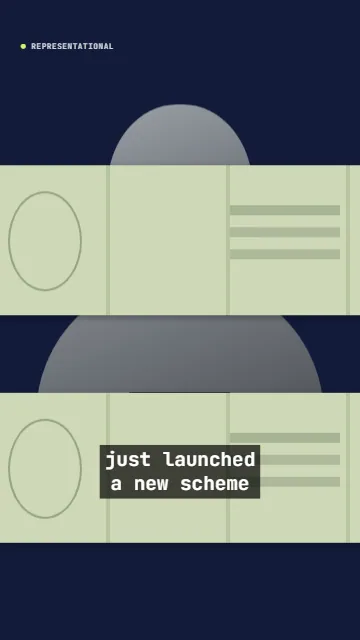
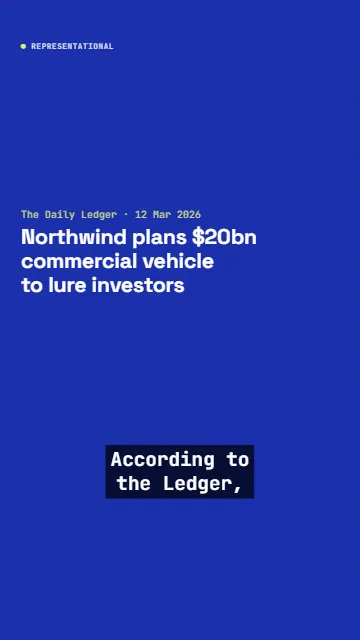
Ready · best with your own footageFaceless · no face on camera
Archive Explainer
inspired by Johnny Harris
Documentary-style explainers: archive pictures cut on every phrase, receipt cards with the key words in lime on a royal-blue canvas, and white mono captions in black boxes. Also cuts your two-camera podcast into calm, boxed-caption clips.
needs: a voice-over (+ your own archive photos, optional)
F-A: a voice-over only
F-B: a conversation (two or more people on camera)
2 formats: Archive explainer · Podcast clip
English (English speech, English captions) · 3 more language options
Best with your own photos of the people and places you name; without them every picture is a created plate. Map cards are schematic until the geo-map bundle ships.
To use it, tell Claude Archive Explainer · Full preview →
Ready
Cinematic List / Montage
inspired by ant.lon
Premium, minimal reels: one cobalt title chip, one word at a time in a bold sans and an italic serif, list titles with photos floating above your head, or a moody montage of your own B-roll.
needs: just you talking
F-A: just you talking
F-B: you + your own B-roll
2 formats: List overlay · Cinematic montage
English (English speech, English captions) · 3 more language options
The list format needs only you talking. The montage format needs 25-40 of your own cinematic B-roll clips; with fewer than 12, reels are edited as lists.
To use it, tell Claude Cinematic List / Montage · Full preview →
Ready · best with your own footage
Science Flash
inspired by Cleo Abram
Curious explainers told over real footage: you flash on screen for half a second, then every sentence gets its own clip, a lime arrow points at the thing, and bold caps captions carry the story.
needs: you (selfie narration) + your own B-roll
F-A: a voice-over + your own B-roll
1 format: Science Flash
English (English speech, English captions) · 3 more language options
Best with 12-25 short clips you own per minute of reel; missing clips become built diagrams and scale scenes.
To use it, tell Claude Science Flash · Full preview →
Ready · best with your own footage
Cinematic Step Demo
inspired by Peter McKinnon
Warm, cinematic how-tos: your hands shot from above, a black STEP label per step, white captions with one gold italic word.
needs: you at a desk + an overhead shot of your hands (step demo), or a recorded two-person conversation (podcast clip)
F-A: you + your own B-roll
F-B: a conversation (two or more people on camera)
2 formats: Step demo · Podcast clip
English (English speech, English captions) · 3 more language options
Best for food, craft and photography creators who can film their hands from above; the podcast format needs two cameras or one 4K wide.
To use it, tell Claude Cinematic Step Demo · Full preview →
Ready · best with your own footage
Cinematic Vlog Type
inspired by OMGAdrian
Cinematic location vlogs: your own footage cut fast, big yellow keywords with handwritten connector words, a quiet pale-lemon serif subtitle, and paper-card examples that loop back to the first frame.
needs: you talking in a few places + lots of your own B-roll (a drone or overhead shot helps)
F-A: a voice-over + your own B-roll
F-B: a voice-over + your own B-roll
2 formats: Vlog / story · Tutorial with paper cards
English (English speech, English captions) · 3 more language options
Best with 20-40 of your own B-roll clips per minute (places, details, hands, a drone or overhead shot); with fewer, it falls back to re-crops and paper cards.
To use it, tell Claude Cinematic Vlog Type · Full preview →
Ready · best with your own footage
Stunt Compression
inspired by MrBeast
Real stunts cut to a new moment every second: a cold open mid-action, glowing green money tags pinned to the cash, loud comic captions, a countdown clock, and an ending on the winner's face.
needs: a real stunt filmed on 2+ cameras: you, the people taking part, and the prize
F-A: raw event footage from several cameras
1 format: Stunt compression
English (English speech, English captions) · 3 more language options
Only works on your own stunt footage: shoot 2+ vertical 4K cameras, real money or prizes on camera, about 10 minutes of footage per minute of reel.
To use it, tell Claude Stunt Compression · Full preview →